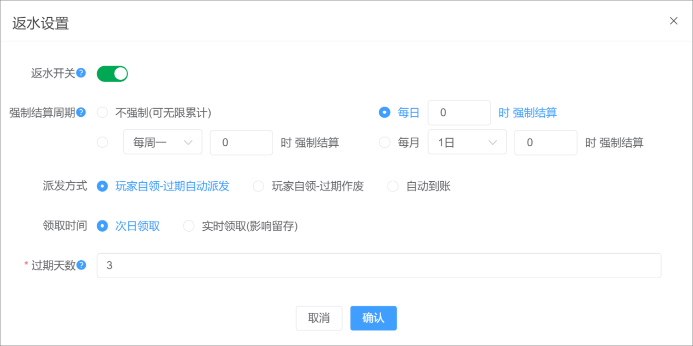

一、返水设置

【返水开关】
开启：客户端显示返水，用户可领取返水奖励，返水统计时间为今日00:00:00开始；
例如：今日10点开启了返水功能，则打码统计今日00点以后的数据。
关闭：客户端不显示返水，用户不可领取返水奖励，未领取的返水奖励可在领取与审核列表查看，再次开启后，用户可领取待领取页面未过期的奖励。
【强制结算周期】
不强制（可无限累计）：更新的返水奖励可一直累计，随时领取，奖励不会过期，领取后，重新累计打码计算返水；
每日x、每周x、每月x 强制结算：到了结算时间点，之前有更新的奖励不再更新，并重新累计打码产生新的返水奖励，所有奖励领取与审核页面可查看；
【派发方式】
玩家自领-过期自动派发：返水奖励会员可手动领取，到过期时间，则未领取的奖励自动派发到账
玩家自领-过期作废：返水奖励会员可手动领取，到过期时间，则未领取奖励作废
系统派发：客户端不展示返水领取按钮，用户不可领取，到达结算周期时间点，自动派发已更新的返水奖励
【领取时间】
次日领取：表示今日更新的奖励，次日才可领取
实时领取（影响留存）：表示今日更新的奖励，今日可领取
【过期时间】
设置0：表示到强制结算时间点，奖励过期
设置大于0：表示更新奖励时间点后+x天的23点59分59秒过期
举例说明：
例子一：
结算周期：不强制
用户打码10分钟后，用户进入客户端返水详情页面，返水奖励自动更新，如果用户未进入返水详情页面，则后台会定时更新，更新后客户端及待领取表可查看
①用户手动领取，则重新累计返水
②用户不领取，则返水一直累计
例子二：
结算周期：每日0时 强制结算
派发方式：玩家自领-过期自动派发
领取时间：次日领取
过期时间：3天
用户打码10分钟后，用户进入客户端返水详情页面，返水奖励自动更新，如果用户未进入返水详情页面，则后台会定时更新，更新后客户端及待领取表可查看
返水奖励更新时，领取时间、过期时间同步更新
①用户1月1日 00:00:00后有打码，返水奖励当天更新后，该返水奖励开始领取时间为：1月2日00:00:00，过期时间为：更新时间+过期时间，即：1月4日 23:59:59；过期后还未领取则自动派发到账
②每日0时过后，用户累计的打码重新统计
例子三：
结算周期：每周一10时 强制结算
派发方式：玩家自领-过期作废
领取时间：实时领取
过期时间：3天
用户打码10分钟后，用户进入客户端返水详情页面，返水奖励自动更新，如果用户未进入返水详情页面，则后台会定时更新，更新后客户端及待领取表可查看
返水奖励更新时，领取时间、过期时间同步更新
①用户1月1日 00:00:00后有打码，返水奖励当天更新后，该返水奖励开始领取时间为：1月1日00:00:00，过期时间为：更新时间+过期时间，即：1月4日 23:59:59；过期后还未领取则作废
②每周一10时过后，用户累计的打码重新统计
例子四：
结算周期：每日10时 强制结算
派发方式：自动到账
用户打码10分钟后，用户进入客户端返水详情页面，返水奖励自动更新，如果用户未进入返水详情页面，则后台会定时更新，更新后客户端及待领取表可查看
返水奖励更新时，领取时间、过期时间同步更新
①用户1月1日 00:00:00后有打码，返水奖励当天更新后，该返水奖励开始领取时间为：1月1日10:00:00，过期时间为：1月1日10:00:00，即领取时间和过期时间一致，用户不可手动领取，奖励过期自动派发到账
②每日10时过后，用户累计的打码重新统计
备注：
1、如果中途修改配置，未领取且未强制结算的奖励，并且用户有更新打码，则下次奖励更新会按照最新配置，会同步领取时间和过期时间
2、在执行过期奖励派发的时候，会读取返水配置，配置是自动派发，则会过期派发到账；配置是过期作废，则过期奖励作废
二、新增返水
1、参与会员层级：当前币种下勾选的层级才可参与返水，领取返水奖励；未勾选的层级客户端不展示返水
2、新增返水可按照币种、层级进行创建，一个币种同一个层级只能创建一次，多个币种已创建的层级不可再次创建
3、稽核倍数：设置返水金额需打码多少倍流水才可提现
4、稽核平台：打码只统计勾选的平台打码
5、返水设定：
①可新增返水阶梯，设置对应返水比例，返水比例按照平台设置
②可按照VIP等级，设置对应返水比例，返水比例按照平台设置
备注：所有已结算的返水奖励，需要在客户端【待领取】页面进行领取，返水详情页面仅展示未结算的返水洗码数据